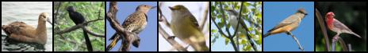
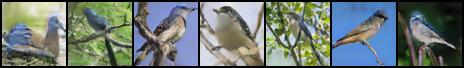
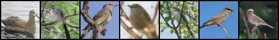
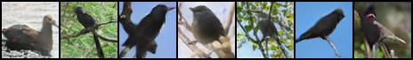
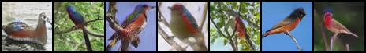
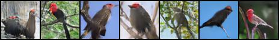
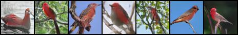

| Description | Image |
| ORIGINAL |  |
| This small bird has a blue crown and white belly. |  |
| This small yellow bird has grey wings, and a black bill. | |
| A small brown bird with a brown crown has a white belly. |  |
| This black bird has no other colors with a short bill. |  |
| An orange bird with green wings and blue head. |  |
| A black bird with a red head. |  |
| This particular bird with a red head and breast and features grey wings. |  |